Xin chào, I'm Katie!
- Who
I am an engineer-turned designer, researcher, sticker enthusiast, occasional dancer, and perfume collector.
Outside of design, you'll find me exploring Skull Caverns in Stardew Valley, sipping my way through Molly Tea's entire menu, or planning my next Muji trip.
- What
Human Centered Design & Engineering + Data Science @ University of Washington
Previously at ClubHudl, KidsTeam UW, and Microsoft
- Why
Design should highlight human experiences. I find joy in connecting the dots through empathy, data, and design to create products and experiences that bring delight and charm.
- For
Through design, I aim to provide platforms to bring together communities and promote meaningful storytelling.
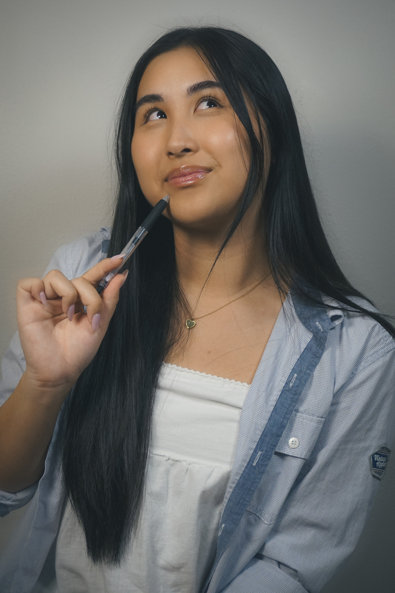
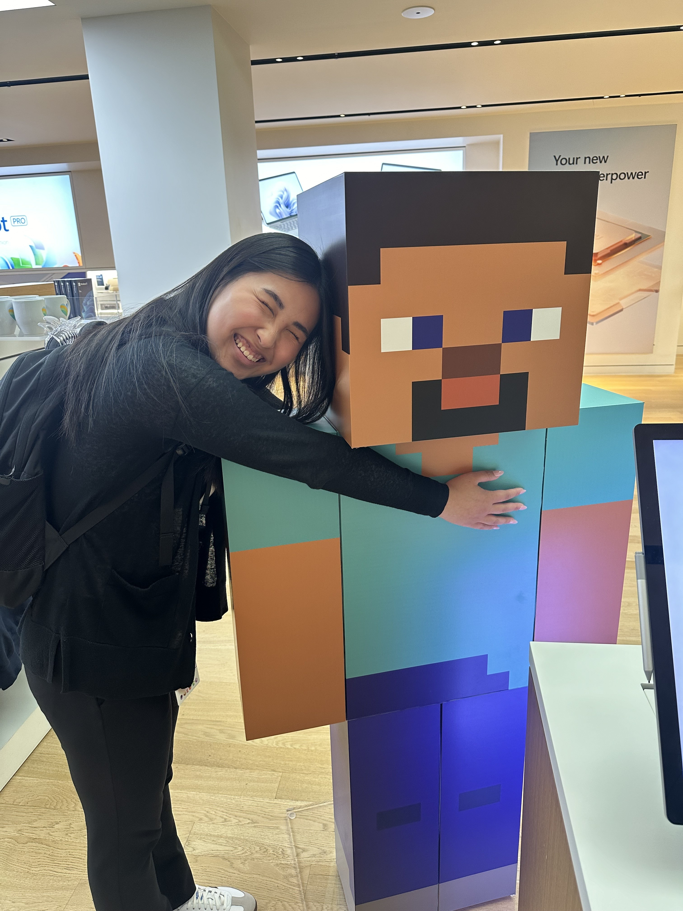
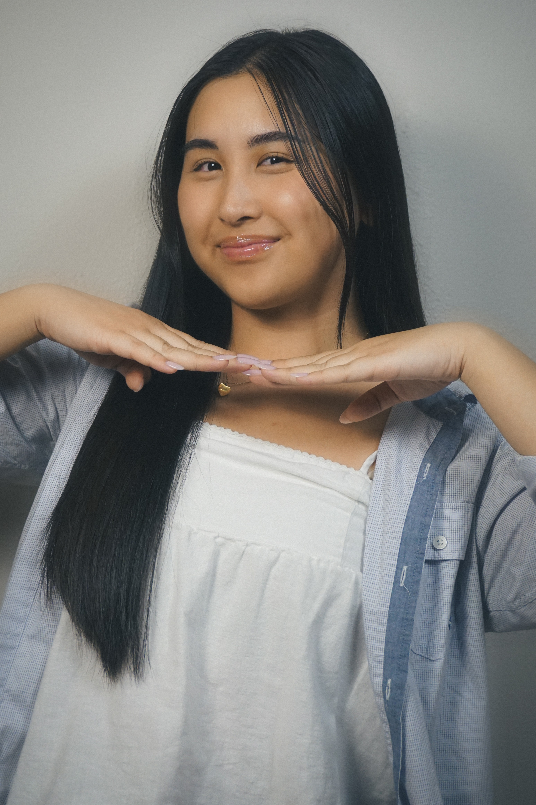
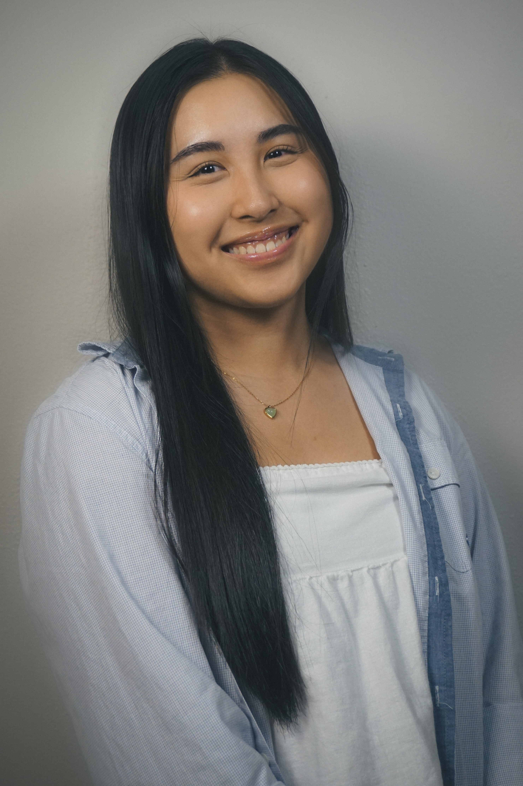
My campus communities!
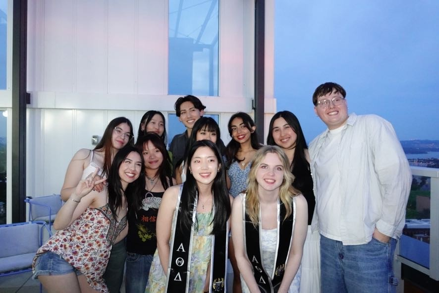
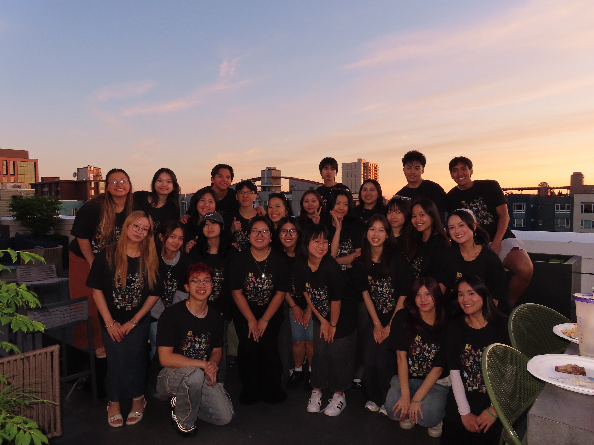
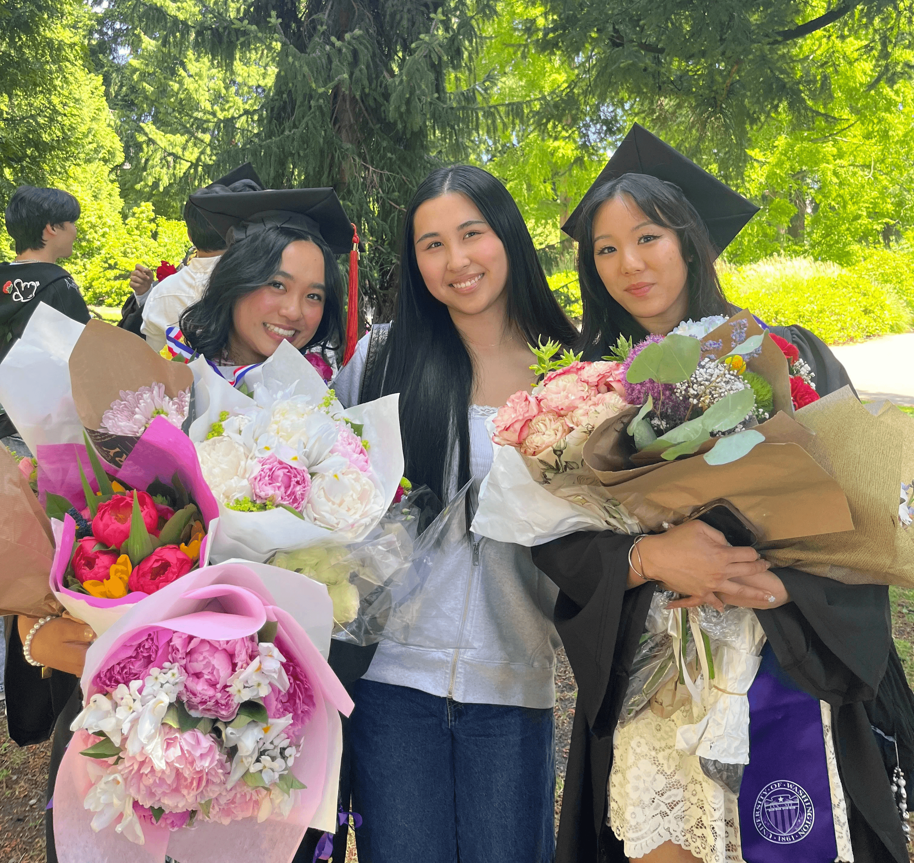
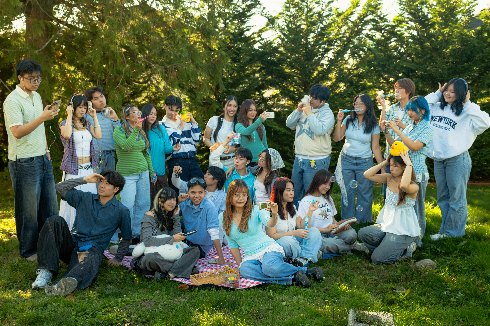
Outside of pixels…
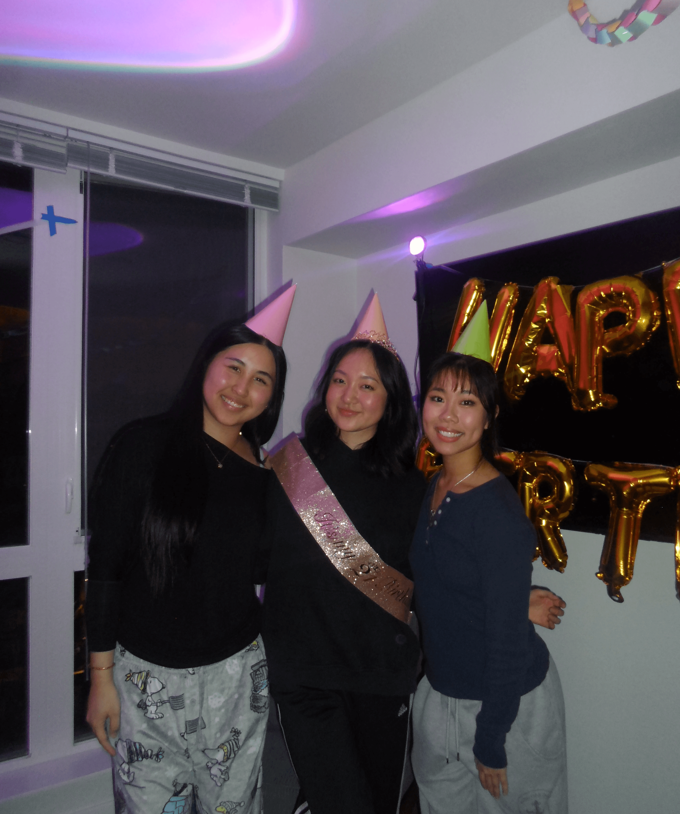
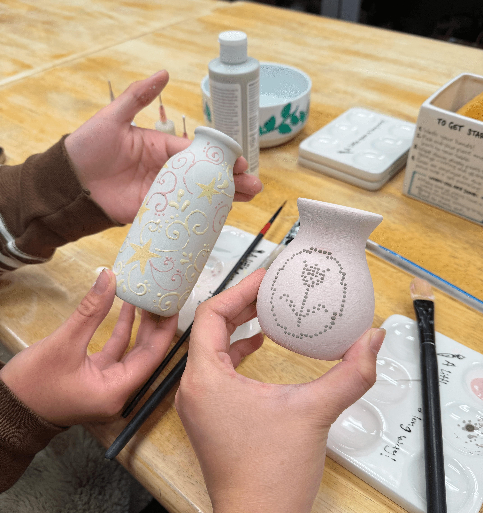
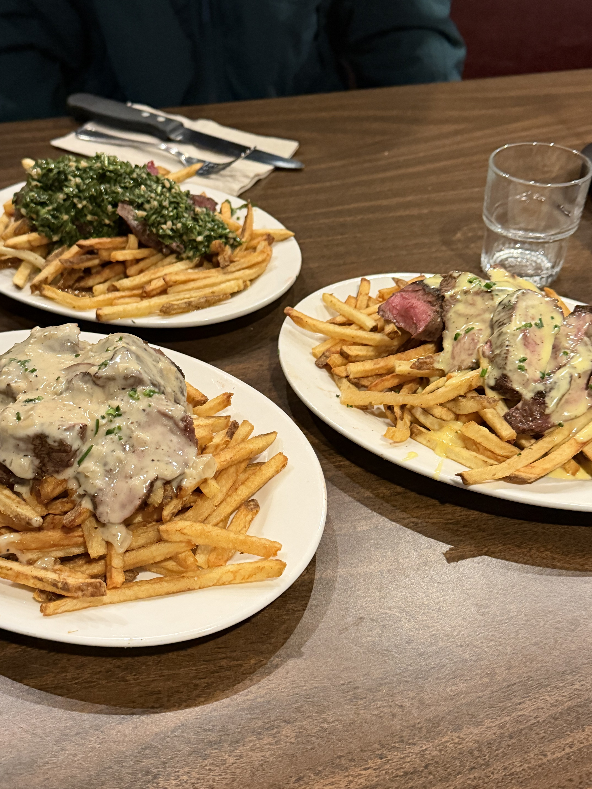
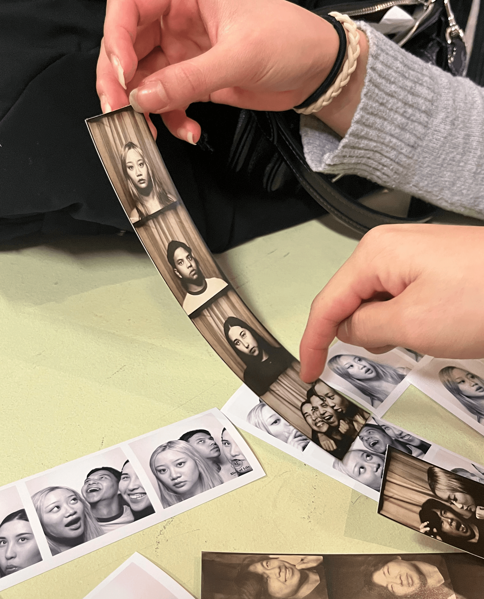
Favorite song
Current brainworm
Theranos